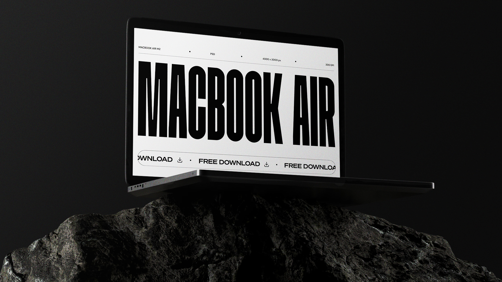

TVŮRCE VIZUÁLNÍCH ZÁŽITKŮ
o mně
Pomáhám značkám vyniknout v digitálním světě a vyčnívat z řady
Ahoj, jmenuju se Filip doskočil, Creative Graphic Designer působící v Praze
mise
S více než 3 lety zkušeností v oblasti grafického designu jsem oddaný designér specializující se na tvorbu vizuálně atraktivního minimalistického designu.
Jsem nadšený z každou další výzvou, která mě posouvá vpřed. S osobním přístupem se snažím porozumět přáním a preferencím každého klienta, abychom společně dosáhli dokonalého výsledku.
příběh
S grafickým světem se seznámil v roce 2019, kdy jako barman přišel o práci během koronavirové pandemie. Od té doby touží po neustálém učení a rozvoji ve své profesi, což ho motivuje vpřed.
Je absolventem kurzu "Reprodukční grafik" na SŠ mediální grafiky a tisku. V roce 2021 absolvoval kurz "Webflow web designer" od Flux Academy, který mu poskytl cennou pomoc v budování webů "bez kódu". Téhož roku se plně věnuje grafickému designu jako freelancer.
S čím vám mohu pomoci
Přijímám zakázky v oblasti grafiky pro různé účely. Bez ohledu na to, zda potřebujete reklamní grafiku, úpravu obrázků nebo jednoduchou sazbu.
Nabízené služby:

Firmám a start-upům poskytuji originální a jedinečnou kreativitu, která jim pomáhá vyniknout na trhu a budovat silnou značku.
Nabízené služby:

Každá firma si zaslouží individuální a kreativní vystupování na internetu, které není tvořeno šablonou.
Nabízené služby:
Vytvářím působivé animace pro reklamy a weby, které oživují můj design a dodávají mu zajímavost.
Nabízené služby:
portfolio – projekty – portfolio – projekty – portfolio – projekty –
portfolio – projekty – portfolio – projekty – portfolio – projekty –
©2023 Designer Filip Doskočil
Zpět na začátek